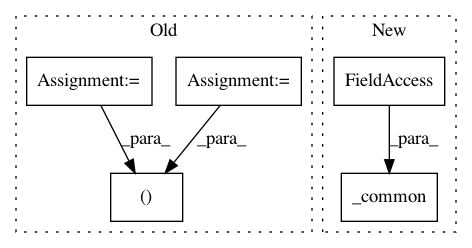

c087a452bb944e2dea0a87f78476664f473f0bac,onnx_tf/handlers/backend/space_to_depth.py,SpaceToDepth,version_1,#Any#Any#,20
Before Change
def version_1(cls, node, **kwargs):
x = kwargs["tensor_dict"][node.inputs[0]]
x_rank = len(x.get_shape())
storage_format, compute_format = get_data_format(x_rank)
attrs = copy.deepcopy(node.attrs)
attrs["data_format"] = storage_format
return [
After Change
@classmethod
def version_1(cls, node, **kwargs):
return cls._common(node, **kwargs)
@classmethod
def version_13(cls, node, **kwargs):
return cls._common(node, **kwargs)
In pattern: SUPERPATTERN
Frequency: 3
Non-data size: 5
Instances
Project Name: onnx/onnx-tensorflow
Commit Name: c087a452bb944e2dea0a87f78476664f473f0bac
Time: 2021-01-13
Author: wtsang@us.ibm.com
File Name: onnx_tf/handlers/backend/space_to_depth.py
Class Name: SpaceToDepth
Method Name: version_1
Project Name: onnx/onnx-tensorflow
Commit Name: 7e1a2a4b65ba10ed1ad8a133264f34961bfd5e56
Time: 2021-01-13
Author: chhuang@us.ibm.com
File Name: onnx_tf/handlers/backend/expand.py
Class Name: Expand
Method Name: version_8
Project Name: onnx/onnx-tensorflow
Commit Name: 50af65e38a5b19d1c9f7920fe2413497892b2260
Time: 2021-01-27
Author: chhuang@us.ibm.com
File Name: onnx_tf/handlers/backend/mean_variance_normalization.py
Class Name: MeanVarianceNormalization
Method Name: version_9